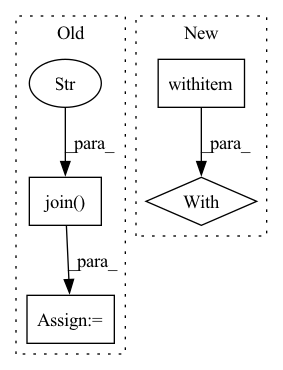

Pattern ID :16623
Before Change
def visualize(data_dir, model_path):
test_img_dir = os.path.join(data_dir, "test", "rgb")
test_msk_dir = os.path.join( data_dir, "test" , "masks")
test_dataset = MyDataset(images_dir=test_img_dir, masks_dir=test_msk_dir,
classes=SYNPICK_CLASSES)
After Change
if seg_model is not None:
seg_model.eval()
with torch.no_grad():
x_tensor = torch.from_numpy(image).to(DEVICE).unsqueeze(0)
print(x_tensor.shape)
pr_mask = seg_model.predict(x_tensor)
pr_mask = pr_mask.argmax(dim=1).squeeze().cpu().numpy().astype("uint8")In pattern: SUPERPATTERN
Frequency: 6
Non-data size: 4
Instances Fragment ID: 55828115
Project Name: ais-bonn/vp-suite
Commit Name: 36b68bc67b166214b4c2975c8394f80bea8a212a
Time: 2021-07-15
Author: boltres@ais.uni-bonn.de
File Name: visualize.py
M Class Name: AnonimousClass
N Class Name: AnonimousClass
M Method Name: visualize(2)
N Method Name: visualize(2)
M Parent Class:
N Parent Class:
M File Name: visualize.py
N File Name: visualize.py
M Start Line: 16
M End Line: 41
N Start Line: 16
N End Line: 33
Before Change
// self.images.append(os.path.join(root_dir, row[0] + ".jpg"))
// self.masks.append(os.path.join(root_dir, row[0] + "_m.png"))
ids = os.listdir(os.path.join( root_dir, "images" ) )
self.images = [os.path.join(root_dir, "images", image_id) for image_id in ids]
self.masks = [os.path.join(root_dir, "masks", image_id) for image_id in ids]
After Change
"You need to implement the classes to index mapping for the dataset"
)
with open(file_path, "r") as f:
csv_reader = csv.reader(f)
for index, row in enumerate(csv_reader):
self.images.append(os.path.join(root_dir, row[0] + ".jpg"))
self.masks.append(os.path.join(root_dir, row[0] + "_m.png"))
Fragment ID: 55828118
Project Name: biasvariancelabs/aitlas
Commit Name: 9d2d43424f557c2b37c41651c8c8e2fab652a60e
Time: 2020-11-01
Author: ivica.dimitrovski@gmail.com
File Name: aitlas/datasets/landcover_ai.py
M Class Name: SegmentationDataset
N Class Name: SegmentationDataset
M Method Name: load_dataset(3)
N Method Name: load_dataset(3)
M Parent Class: BaseDataset
N Parent Class: BaseDataset
M File Name: aitlas/datasets/landcover_ai.py
N File Name: aitlas/datasets/landcover_ai.py
M Start Line: 62
M End Line: 64
N Start Line: 52
N End Line: 58
Before Change
def main():
experiment_dir = os.path.dirname(os.path.realpath(__file__))
params_file = os.path.join( experiment_dir, "hyperparams.yaml" )
sourcesep_samples_dir = os.path.realpath(
os.path.join(
experiment_dir,
"..",
"..",
"..",
"..",
"samples",
"audio_samples",
"sourcesep_samples",
)
)
with open(params_file) as fin:
hparams = sb.yaml.load_extended_yaml(
fin, {"data_folder": sourcesep_samples_dir},
)
After Change
data_folder = (experiment_dir / data_folder).resolve()
// Load model hyper parameters:
with open(hparams_file) as fin:
hparams = sb.load_extended_yaml(fin)
// Dataset creation
train_data, valid_data = data_prep(data_folder, hparams) Fragment ID: 55828117
Project Name: speechbrain/speechbrain
Commit Name: c9b83509f0a07e61ef75f23e359eec163c98ad12
Time: 2020-12-26
Author: mirco.ravabelli@gmail.com
File Name: recipes/minimal_examples/neural_networks/separation/example_conv_tasnet.py
M Class Name: AnonimousClass
N Class Name: AnonimousClass
M Method Name: main(0)
N Method Name: main(0)
M Parent Class:
N Parent Class:
M File Name: recipes/minimal_examples/neural_networks/separation/example_conv_tasnet.py
N File Name: recipes/minimal_examples/neural_networks/separation/example_conv_tasnet.py
M Start Line: 153
M End Line: 189
N Start Line: 130
N End Line: 153
Before Change
def get_train_valid_data(image_folder, mask_folder):
image_list = [cv2.imread(img) for img in glob.glob(os.path.join(image_folder, "*.png"))]
mask_list = [cv2.imread(img, cv2.IMREAD_GRAYSCALE) for img in glob.glob(os.path.join( mask_folder, "*.png" ) )]
train_ds = RoofTopDataset(image_list, mask_list, transform=train_trfm)
valid_ds = RoofTopDataset(image_list, mask_list, transform=val_trfm)
return train_ds, valid_ds
After Change
def get_train_valid_data(image_folder, mask_folder):
image_list, mask_list = [], []
with concurrent.futures.ProcessPoolExecutor() as executor:
image_files = glob.glob(image_folder + "/*.png")
mask_files = glob.glob(mask_folder + "/*.png")
for images, masks in executor.map(load_img_mask, image_files, mask_files): Fragment ID: 55828121
Project Name: chanceqz/rooftopsegmatation
Commit Name: 73672cb80953fd4a7f7faea25857fa5353b4d5ea
Time: 2021-04-26
Author: qz_gis@163.com
File Name: roottop_dataset.py
M Class Name: AnonimousClass
N Class Name: AnonimousClass
M Method Name: get_train_valid_data(2)
N Method Name: get_train_valid_data(2)
M Parent Class:
N Parent Class:
M File Name: roottop_dataset.py
N File Name: roottop_dataset.py
M Start Line: 76
M End Line: 81
N Start Line: 92
N End Line: 104
Before Change
os.path.abspath(os.path.expanduser(identify_file)))
ssh = paramiko.SSHClient()
ssh.set_missing_host_key_policy(paramiko.AutoAddPolicy())
private = paramiko.RSAKey.from_private_key_file(
os.path.join( ssh_directory, "id_rsa" ) )
config = paramiko.config.SSHConfig.from_path(
os.path.join(ssh_directory, "config"))
conf = config.lookup(host)After Change
def start_remote_server(host, local_server_num, identify_file):
with ssh_connect(host, identify_file) as ssh:
sftp = ssh.open_sftp()
sftp.put("/tmp/hetu_ps_config.yml",
"/tmp/hetu_ps_config.yml", confirm=True)
sftp.close() Fragment ID: 55828127
Project Name: hsword/hetu
Commit Name: 31b5486597f4292a32cc2cdb30fa9379c95d08f9
Time: 2021-09-13
Author: 657671989@qq.com
File Name: python/runner.py
M Class Name: AnonimousClass
N Class Name: AnonimousClass
M Method Name: start_remote_server(3)
N Method Name: start_remote_server(3)
M Parent Class:
N Parent Class:
M File Name: python/runner.py
N File Name: python/runner.py
M Start Line: 37
M End Line: 60
N Start Line: 57
N End Line: 71
Before Change
def write_pbtxt(save_path, contents):
fs = tf.io.gfile.get_filesystem(save_path)
config_path = fs.join( save_path, "projector_config.pbtxt" )
fs.write(config_path, tf.compat.as_bytes(contents), binary_mode=True)
def make_mat(matlist, save_path):After Change
def write_pbtxt(save_path, contents):
config_path = _gfile_join(save_path, "projector_config.pbtxt")
with tf.io.gfile.GFile(config_path, "wb") as f:
f.write(tf.compat.as_bytes(contents))
def make_mat(matlist, save_path): Fragment ID: 55828126
Project Name: pytorch/pytorch
Commit Name: c00b135adfd8b04ff3c4b8416c3be820a5d20a6f
Time: 2022-12-08
Author: ppwwyyxx@users.noreply.github.com
File Name: torch/utils/tensorboard/_embedding.py
M Class Name: AnonimousClass
N Class Name: AnonimousClass
M Method Name: write_pbtxt(2)
N Method Name: write_pbtxt(2)
M Parent Class:
N Parent Class:
M File Name: torch/utils/tensorboard/_embedding.py
N File Name: torch/utils/tensorboard/_embedding.py
M Start Line: 62
M End Line: 64
N Start Line: 76
N End Line: 80